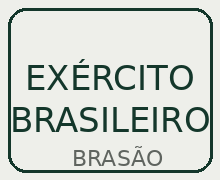
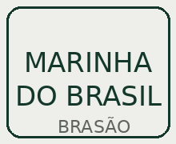
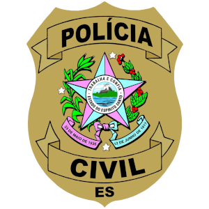
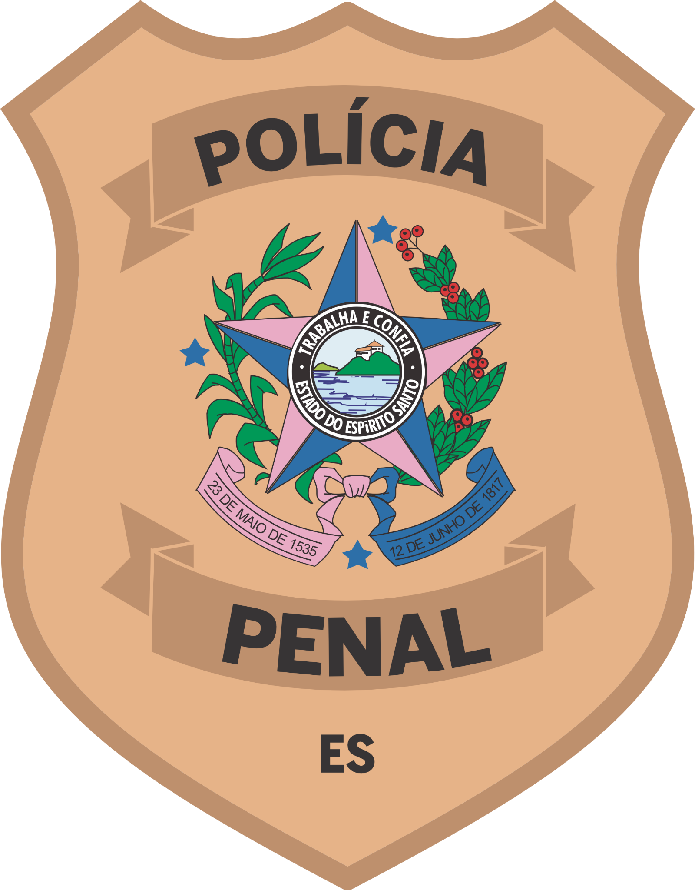
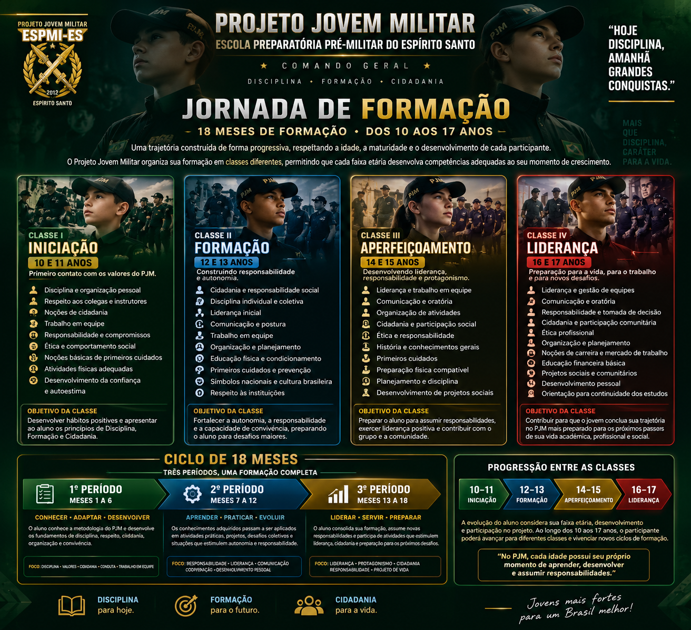

DISCIPLINA • RESPEITO • FOCO • LIDERANÇA
Jovens mais fortes
para um Brasil
melhor.
O Projeto Jovem Militar é uma escola preparatória que desenvolve disciplina, formação e cidadania, preparando jovens para os desafios da vida.
CONHEÇA O PROJETO →CARÁTER
DISCIPLINA
CONQUISTAS
SEMPRE
DISCIPLINA
CONQUISTAS
SEMPRE
INSTITUIÇÕES
QUE NOS INSPIRAM
QUE NOS INSPIRAM

EXÉRCITOBRASILEIRO

MARINHADO BRASIL
 FORÇA AÉREA
FORÇA AÉREABRASILEIRA
 POLÍCIA MILITAR
POLÍCIA MILITARDO ESPÍRITO SANTO

POLÍCIA CIVILDO ESPÍRITO SANTO

POLÍCIA PENALDO ESPÍRITO SANTO
Juntos por
uma sociedade
mais segura
e preparada.
uma sociedade
mais segura
e preparada.
⌂FORMAÇÃO DE QUALIDADEBASE PARA GRANDES CONQUISTAS
♙DISCIPLINA E CIDADANIAVALORES PARA TODA A VIDA
▥OPORTUNIDADES REAISUM FUTURO MELHOR
✦JOVENS PREPARADOSUMA SOCIEDADE MAIS FORTE
SOBRE O PROJETO
Mais que uma preparação,
um propósito.
O Projeto Jovem Militar forma jovens com disciplina, respeito, responsabilidade e espírito de servir, contribuindo para uma sociedade mais forte e preparada.
FAÇA SUA PRÉ-INSCRIÇÃO →18 MESESDE FORMAÇÃO
6.500+JOVENS ALCANÇADOS
UNIDADESEM DIVERSAS CIDADES
14+ ANOSDE HISTÓRIA
“Disciplina hoje,
um Brasil melhor
amanhã.”
um Brasil melhor
amanhã.”
NOSSO COMPROMISSO
Formando cidadãos
para novos horizontes.
Acreditamos no potencial da juventude e trabalhamos para fortalecer valores, ampliar oportunidades e construir um futuro com mais responsabilidade.
◎ DISCIPLINA♙ RESPEITO✦ CIDADANIA▥ LIDERANÇA
FORMAÇÃO
Uma jornada organizada
para cada fase.
O ciclo formativo possui 18 meses e acompanha o desenvolvimento do aluno entre 10 e 17 anos.
01
Desenvolvimento pessoal
Responsabilidade, autocontrole, confiança e resiliência.
02
Convivência e liderança
Respeito, trabalho em equipe, liderança e cidadania.
03
Educação e foco
Organização, planejamento, estudos e metas.

CONTATO
Fale com o
Projeto Jovem Militar.
WHATSAPP(27) 99731-0707E-MAILpjmcmdgerales@gmail.comINSTAGRAM@pjmcmdgerales
ENDEREÇOAvenida Coronel Mateus Cunha, 740 — Sernamby, São Mateus/ES